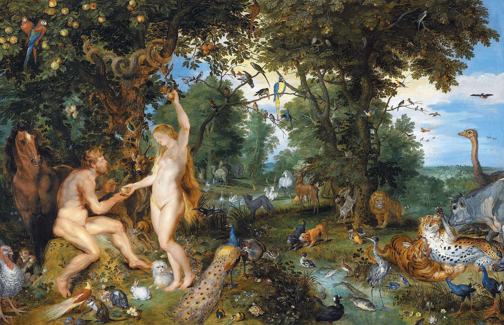
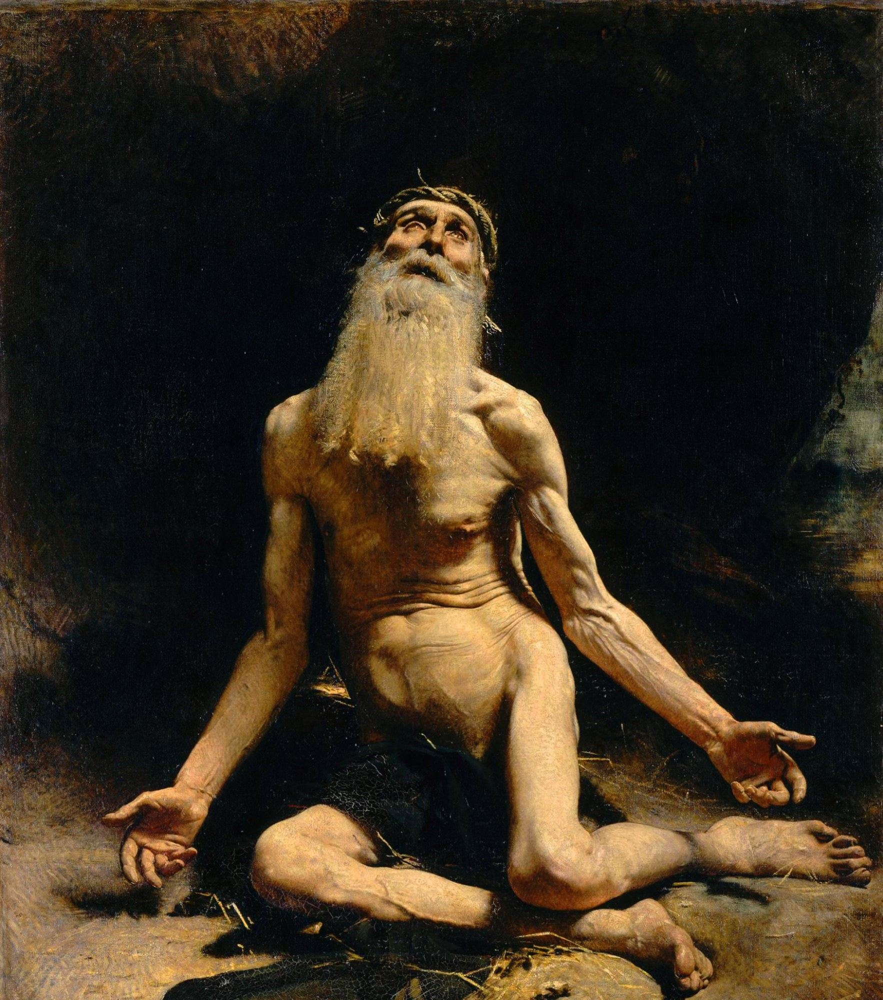
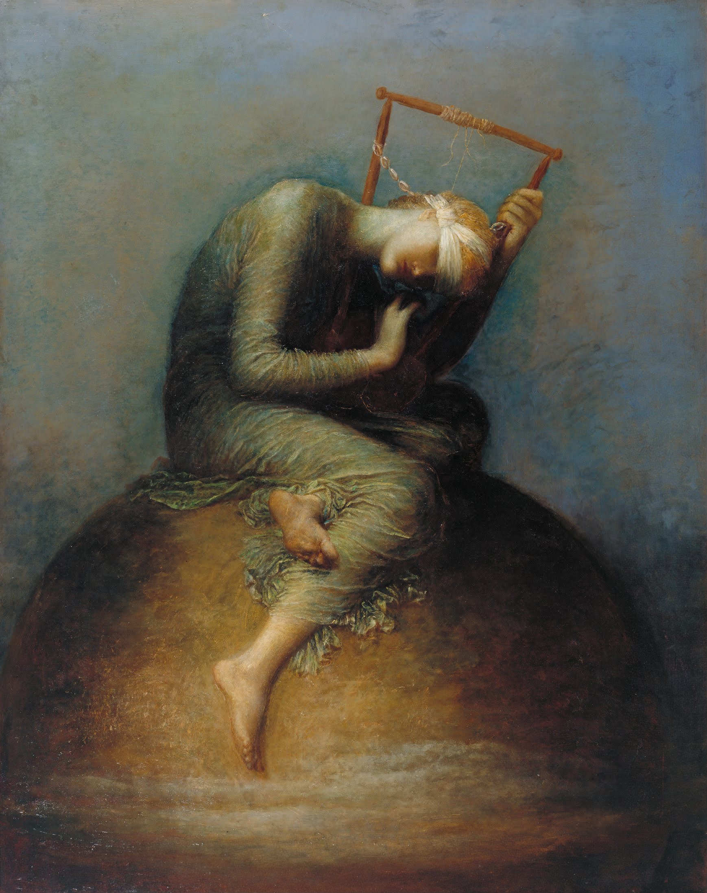
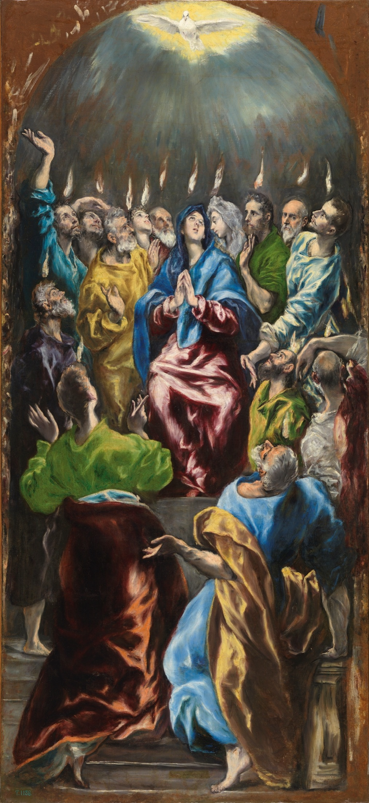
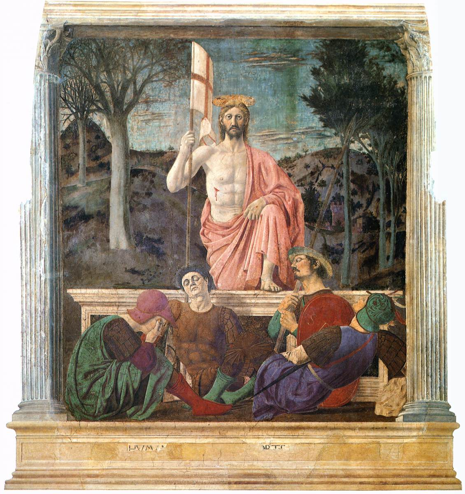
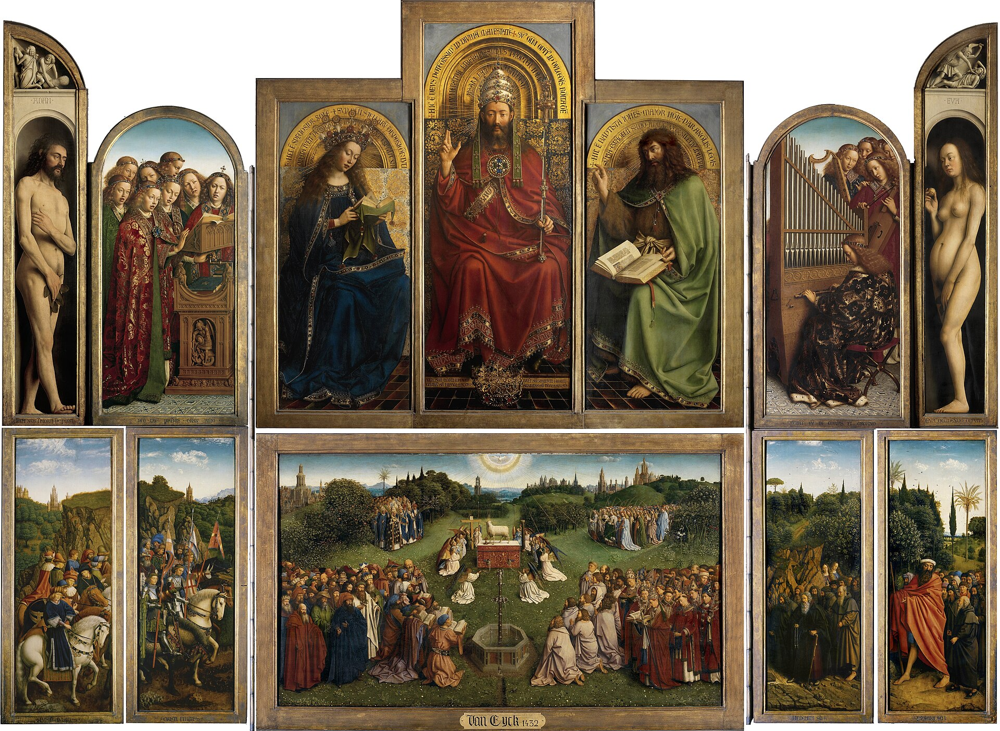

Meditación sobre Romanos 8, 19-27 — para leer despacio, con el corazón en silencio. Gime la creación, gemimos nosotros, gime el Espíritu en nosotros.
Spe salvi facti sumus. «En esperanza fuimos salvados» · Romanos 8, 24
Antes de meditar, escuchar. Leé el texto dos veces: primero con los ojos, después con el corazón.
19Porque el anhelo ardiente de la creación espera la manifestación de los hijos de Dios. 20Pues la creación fue sometida a la vanidad, no de grado, sino por causa de aquel que la sometió, con la esperanza 21de que también la creación misma será liberada de la servidumbre de la corrupción, para participar en la libertad gloriosa de los hijos de Dios. 22Sabemos, en efecto, que la creación entera gime y sufre dolores de parto hasta el presente.
23Y no sólo ella: también nosotros, que poseemos las primicias del Espíritu, gemimos en nuestro interior, anhelando la adopción filial, la redención de nuestro cuerpo. 24Porque en esperanza fuimos salvados; y una esperanza que se ve, ya no es esperanza: pues lo que uno ve, ¿cómo esperarlo? 25Pero si esperamos lo que no vemos, con paciencia lo aguardamos.
26De igual manera, también el Espíritu viene en ayuda de nuestra flaqueza; porque no sabemos pedir lo que conviene, pero el Espíritu mismo intercede por nosotros con gemidos inefables. 27Y el que escudriña los corazones sabe cuál es el deseo del Espíritu: que intercede por los santos según Dios.
La meditación que sigue no reemplaza al texto sagrado: solo lo escolta.
El anhelo ardiente de todo lo creado — vv. 19-22
En medio de la carta más densa que jamás escribió, San Pablo se detiene y hace algo inaudito: presta su voz al universo entero. La creación —dice— aguarda con anhelo ardiente la manifestación de los hijos de Dios. La palabra griega que usa, apokaradokía, pinta a alguien que estira el cuello para ver lo que viene por el camino: la creación está de puntillas. Los ríos y los montes, los animales y los astros, toda la inmensa fábrica del mundo está en vilo, asomada al borde de la historia, esperando algo que todavía no se ve.
¿Por qué espera? Porque está herida. Fue sometida a la vanidad —a la caducidad, a la corrupción, a la muerte— y no por culpa propia: «no de grado». La creación no pecó; fue arrastrada. Cuando Adán cayó, no cayó solo: con él se oscureció el mundo que le había sido confiado como un jardín.
Maldito sea el suelo por tu causa; con fatiga comerás de él todos los días de tu vida. Espinas y abrojos te producirá.
El pecado original no fue un episodio privado: fue una catástrofe cósmica. El hombre era el sacerdote de la creación, el que debía recogerla toda y ofrecerla a Dios; al apartarse él, todo lo que estaba a su cuidado quedó descolocado, como una casa cuando falta el padre. Por eso el mundo entero lleva, junto a su hermosura, una cicatriz: la belleza de un atardecer y la crueldad de la enfermedad, la fecundidad de la tierra y el temblor que la sacude. Todo lo creado es bueno —Dios lo vio y era muy bueno— pero gime bajo una servidumbre que no eligió.

Contra todo desprecio gnóstico de la materia, la fe católica confiesa que el mundo visible es obra de Dios y es bueno. La creación no es un escenario provisorio que será arrojado al fuego como utilería vieja: es un compañero de destino, que será liberado de la corrupción para participar de la libertad gloriosa de los hijos de Dios. El cristianismo no enseña la fuga del mundo, sino su transfiguración.
Esperamos, según su promesa, unos cielos nuevos y una tierra nueva, en los que habite la justicia.
El gemido de la creación no es, pues, un estertor de agonía: es la queja paciente de lo que espera ser rehecho. El universo no camina hacia el vacío, sino hacia una liberación.
Las primicias del Espíritu y la nostalgia de la casa del Padre — v. 23
Y no sólo ella. San Pablo estrecha el círculo: del cosmos pasa al corazón. También nosotros gemimos, «nosotros, que poseemos las primicias del Espíritu». Nótese la paradoja: no gimen menos los que ya han recibido el Espíritu Santo, sino más. El Bautismo nos hizo realmente hijos de Dios; la gracia habita en nosotros como en un templo. Y sin embargo, precisamente por eso, gemimos: quien ha probado las primicias conoce, por su dulzura, cuánto falta todavía para la cosecha entera.
Es el ya, pero todavía no de la vida cristiana. Ya somos hijos; todavía no se ha manifestado lo que seremos. Ya fuimos redimidos; todavía aguardamos la redención de nuestro cuerpo. Por eso el gemido del cristiano no es la queja del descontento, sino la nostalgia del que está de camino: se gime por la patria cuando ya se conoce su nombre.

Yo sé que mi Redentor vive, y que al fin se alzará sobre el polvo; y en mi propia carne veré a Dios.
Job es la figura de este segundo gemido. Despojado de todo, cubierto de llagas, no blasfema ni se resigna: gime hacia Dios. Su queja es una oración con los huesos a la vista. Y en el fondo de su noche pronuncia una de las profecías más luminosas del Antiguo Testamento: en su propia carne verá a Dios.
Hay dos maneras de gemir: lejos de Dios, como quien escupe al cielo, o hacia Dios, como quien golpea la puerta del Padre. El gemido del justo no es falta de fe: es la fe misma con voz de dolor. Quien gime hacia Dios ya está orando.
Gemimos en esta tienda de campaña, anhelando revestirnos de nuestra morada celestial... para que lo mortal sea absorbido por la vida.
El cuerpo presente es una tienda de campaña: digna, amada, pero provisoria. No la despreciamos —fue creada por Dios y será glorificada— pero tampoco la confundimos con la casa definitiva. Y mientras dura el camino, el deseo mismo nos va ensanchando el alma:
La virtud que mira lo que todavía no ve — vv. 24-25
«Porque en esperanza fuimos salvados.» En el centro de la perícopa, San Pablo deja caer esta sentencia que la Iglesia repite desde hace veinte siglos. La salvación es real —fuimos salvados, en pasado— y sin embargo su plenitud se posee al modo de la esperanza: como el heredero posee la herencia prometida, como el sembrador posee la cosecha. Y el Apóstol añade la paradoja: «una esperanza que se ve, ya no es esperanza». La esperanza vive precisamente de no ver.
Aquí conviene la precisión: la esperanza cristiana no es un temperamento optimista ni un cálculo de probabilidades. Es una virtud teologal: infundida por Dios en el Bautismo, tiene por objeto la bienaventuranza eterna y por apoyo, no nuestras fuerzas, sino el auxilio omnipotente y la fidelidad de Dios que promete. El optimista confía en que las cosas saldrán bien; el que espera confía en Alguien.
Tenemos la esperanza como ancla del alma, segura y firme, que penetra hasta más allá del velo.
Contra la esperanza pecan dos: el que presume, dando por poseído lo que aún es promesa, y el que desespera, dando por perdido lo que Dios ha jurado dar. Ambos se niegan a esperar: uno porque cree que ya llegó, otro porque cree que nunca llegará. La esperanza camina entre ambos abismos, con los ojos fijos en la fidelidad de Dios.

«Pero si esperamos lo que no vemos, con paciencia lo aguardamos.» La palabra griega es hypomoné: constancia, aguante, la virtud de quedarse debajo del peso sin soltarlo. La esperanza no es un sentimiento de los días buenos: es una fidelidad de todos los días, hecha de oración perseverante, de deberes cumplidos, de esperas que no se apuran. Los santos no fueron optimistas: fueron constantes.
Bueno es el Señor para quien en Él espera, para el alma que le busca. Bueno es aguardar en silencio la salvación del Señor.
Los gemidos inefables del Espíritu Santo — vv. 26-27
Queda el tercer gemido, el más misterioso de todos. Gime la creación, gemimos nosotros — y gime Dios mismo en nosotros: «el Espíritu intercede por nosotros con gemidos inefables». San Pablo parte de una confesión que nos alcanza a todos: no sabemos pedir lo que conviene. Ni siquiera orar sabemos. Pedimos salud y quizá convenía la cruz; pedimos que pase el cáliz y convenía beberlo. Nuestra oración nace ciega, como nace ciego todo lo nuestro.
Y aquí, donde esperaríamos un reproche, la Escritura pone una ternura: esa incapacidad no es un obstáculo para Dios, sino la puerta por donde entra. El Espíritu Santo no espera que sepamos orar: viene en ayuda de nuestra flaqueza, se une a nuestro gemido torpe y lo convierte en intercesión divina. La oración más honda del cristiano no es la que él fabrica: es la que el Espíritu gime en él.

Y porque sois hijos, Dios envió a vuestros corazones el Espíritu de su Hijo, que clama: ¡Abbá, Padre!
Se dice que el Espíritu «pide gimiendo» no porque padezca necesidad, sino porque nos hace pedir: Él suscita en nosotros los deseos rectos y los gemidos del amor. Y el Padre, «que escudriña los corazones», reconoce en nuestro gemido el deseo de su propio Espíritu — por eso esa oración es siempre escuchada: pide según Dios.
Toda oración cristiana es, así, trinitaria: el Espíritu gime en nosotros, por el Hijo, hacia el Padre. Cuando no salgan las palabras, cuando la sequedad parezca vencer, cuando lo único que quede sea un suspiro sin forma — no hemos fracasado en la oración: hemos llegado a su fondo. Allí donde termina nuestra elocuencia empieza la suya.
Derramaré sobre ellos un espíritu de gracia y de súplica.
Los tres gemidos son una sola música
Ahora los tres gemidos pueden oírse juntos: el de la creación, el nuestro, el del Espíritu. Y se descubre que no son tres lamentos, sino una sola música con tres voces. San Pablo eligió la imagen con precisión de teólogo y delicadeza de padre: dolores de parto. No son los dolores del que agoniza, sino los de la que da a luz: un dolor con dirección, un dolor que trabaja, un dolor del que va a nacer algo.
La mujer, cuando da a luz, está triste, porque le ha llegado su hora; pero cuando ha dado a luz al niño, ya no se acuerda de la tribulación, por el gozo de que ha nacido un hombre al mundo.
¿Y qué es lo que está por nacer? San Pablo lo dice sin rodeos: la redención de nuestro cuerpo. No la liberación del cuerpo, como soñaron todos los gnosticismos antiguos y modernos, sino la redención de nuestro cuerpo: su rescate, su glorificación. El cristianismo es la religión del Verbo hecho carne; no desprecia la materia que Dios asumió. Creemos en la resurrección de la carne.
Nuestra ciudadanía está en los cielos, de donde esperamos como Salvador al Señor Jesucristo, que transformará nuestro pobre cuerpo conforme a su cuerpo glorioso.
«La gloria de Dios es el hombre viviente; y la vida del hombre es la visión de Dios.» La carne que las manos de Dios plasmaron del barro no fue hecha para el polvo eterno: es capaz de incorrupción. Lo que ocurrió en Cristo resucitado —primicias de los que durmieron— ocurrirá en los suyos.

Por eso el sufrimiento cristiano tiene dirección. El mundo conoce el dolor; sólo la fe conoce el parto. Quien mira la historia sin Cristo oye un gemido sin sentido; quien la mira con Cristo oye el trabajo de una creación nueva que pugna por nacer. La diferencia no está en el dolor, que es el mismo: está en la esperanza, que lo transfigura.
Lo que espera al final de todos los gemidos
Un versículo antes de nuestra perícopa, San Pablo había puesto la balanza: en un platillo, los padecimientos del tiempo presente —y él sabía de qué hablaba: azotes, naufragios, cárceles—; en el otro, la gloria que se ha de manifestar en nosotros. Y la balanza ni siquiera oscila. No porque el dolor sea poco, sino porque la gloria es desmesurada: ser conformes a la imagen del Hijo, ver a Dios cara a cara, vivir de su misma vida para siempre.
Ahora somos hijos de Dios, y aún no se ha manifestado lo que seremos. Sabemos que, cuando se manifieste, seremos semejantes a Él, porque le veremos tal cual es.

Miren el retablo de Gante: praderas, árboles, ciudades al fondo — la creación entera está ahí, no abolida sino transfigurada, convertida en liturgia alrededor del Cordero. Es la respuesta visual al gemido de Romanos 8: la tierra que gemía, hecha altar; los cuerpos que esperaban su redención, vestidos de gloria; y en el centro, Aquel que fue inmolado. Entonces los tres gemidos —el de la creación, el nuestro, el del Espíritu— se revelarán como lo que siempre fueron: las tres voces de un solo canto que todavía no sabíamos cantar.
Enjugará toda lágrima de sus ojos, y no habrá ya muerte, ni llanto, ni gemido, ni dolor, porque las primeras cosas pasaron. Y dijo el que estaba sentado en el trono: He aquí que hago nuevas todas las cosas.
Tengo por cierto que los padecimientos del tiempo presente no son comparables con la gloria que se ha de manifestar en nosotros. Romanos 8, 18
Aplicación espiritual de los tres gemidos
La meditación que no baja a la vida se queda en literatura. Cuatro resoluciones concretas, una por cada movimiento de esta página del Apóstol:
Cuando llegue el dolor —el propio o el del mundo—, unirlo al gemido de la creación y a la Cruz de Cristo. El sufrimiento del cristiano no es un callejón sin salida: es un pasaje. Nada de lo que se padece con Él se pierde; todo está gestando gloria.
La fidelidad se prueba en lo oculto: la oración árida, el deber de cada día, la caridad que nadie aplaude. La fe probada es «más preciosa que el oro» (1 Pedro 1, 7). No hace falta ver para seguir sembrando.
Ni la presunción que da todo por ganado, ni la desesperación que da todo por perdido: la hypomoné, la paciencia de quien sabe a Quién ha creído. Esperar también es una obra — quizá la más callada de todas.
Cuando no salgan las palabras, no salir de la presencia. El silencio dócil, ofrecido, ya es oración: el Espíritu gime en él según Dios. Bastan cinco minutos diarios de ese silencio para que Él trabaje.
La creación entera está en vísperas; el cristiano es quien ya escucha, dentro del gemido del mundo, la música de la gloria.
Espíritu Santo, Dios de los gemidos inefables: no sabemos pedir lo que conviene; ven en ayuda de nuestra flaqueza y ora Tú en nosotros.
Cuando la creación gima a nuestro alrededor y el dolor nos doble, enseñanos a escuchar, dentro del gemido, los dolores de un parto y no los de una agonía.
Concédenos esperar lo que no vemos: la redención de nuestro cuerpo, la libertad gloriosa de los hijos de Dios, el día en que será enjugada toda lágrima.
Que aguardemos con paciencia, sin presunción y sin desesperación, fijos los ojos en Cristo resucitado, primicia de los que duermen.
Y cuando no tengamos palabras, que nos baste tu gemido, que es más hondo que nuestro silencio. Por Jesucristo nuestro Señor.